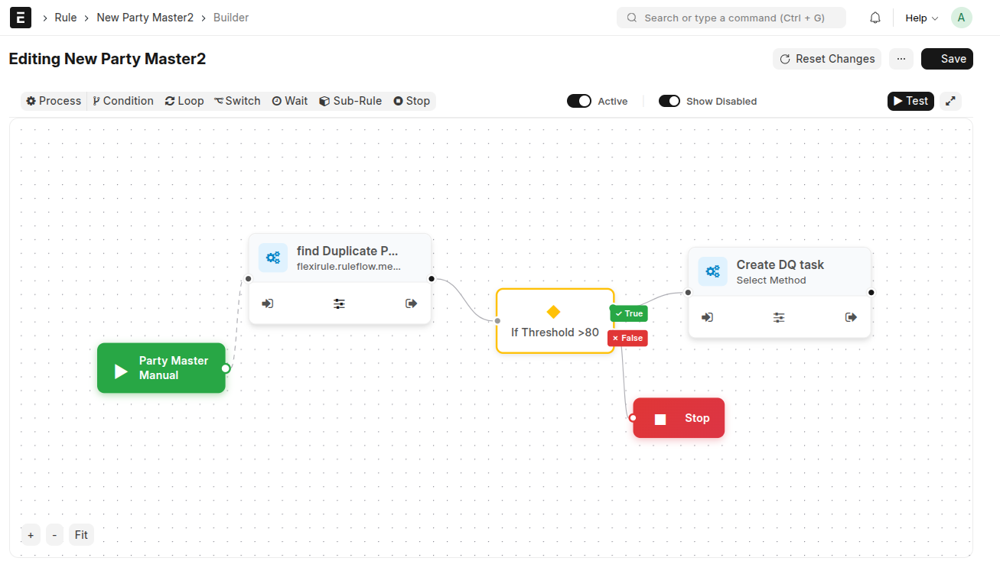

Built for Frappe apps and ERPNext. Design executable business logic visually with full control, observability, and safety.

In modern enterprise systems, business logic often evolves into a fragmented web of Python hooks. FlexiRule changes the paradigm.
Move rules out of scattered .py files into a single, auditable dashboard.
Custom UI controls allow complex logic setup without a single line of code.
Connections define deterministic paths. No more guessing which hook runs first.
Configuration forms for custom logic are auto-generated from JSON schemas.
Smooth graph-editing via a VueFlow canvas rendered dynamically from Frappe backend schemas.
Transparently pre-compiled into ultra-fast, single-pass pure Python strings to avoid runtime overhead.
Built-in cycle detection and deterministic graph execution engine for maximum safety.
Retry with exponential backoff, rollback with savepoints, and escalation triggers.
Join the community and help shape the future of visual automation.
View full documentation# Get the app
bench get-app flexirule https://github.com/Sendipad/flexirule.git
# Install to your site
bench --site [your-site] install-app flexirule
# Build assets
bench build --app flexirule